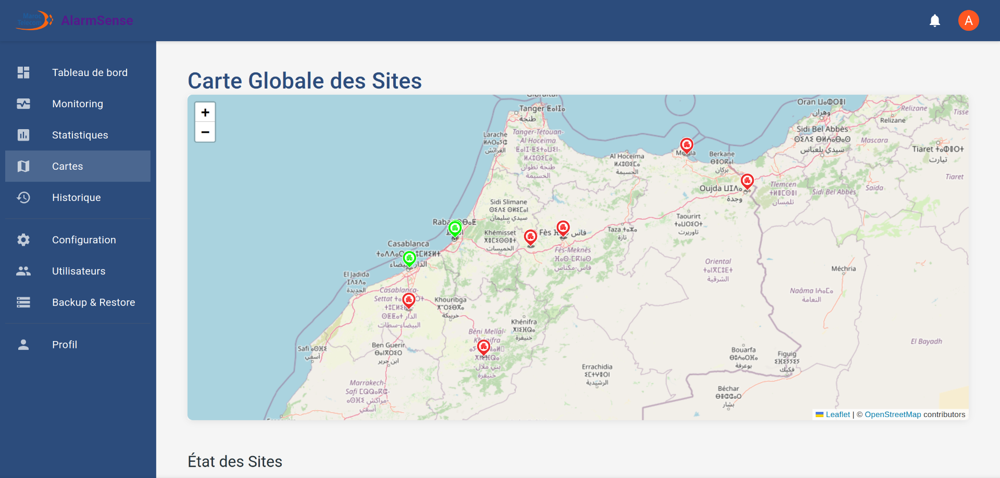
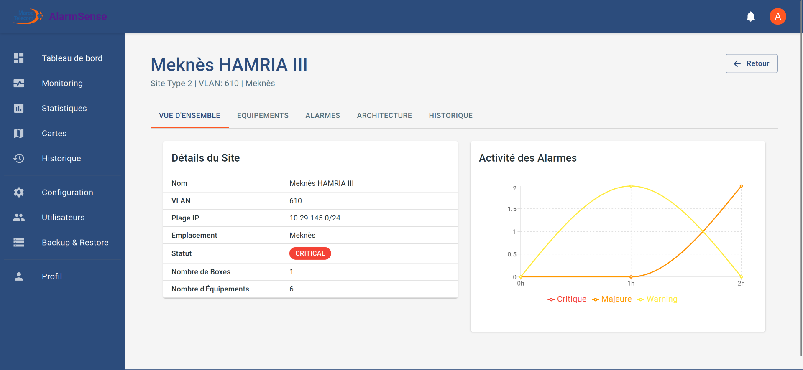

Data Center Monitoring System
Real-time equipment monitoring system with alerts for proactive detection of infrastructure incidents
Project Overview
The Data Center Monitoring System is a modern solution developed to replace an obsolete environmental alarm supervision system (AlarmManager) at Maroc Telecom. This new system provides real-time monitoring of critical environmental conditions across multiple data center sites, with immediate alerts for any detected anomalies.
The platform uses a microservices architecture with high availability (1+1 geographic redundancy) to ensure continuous operation even in the event of a site failure. The system integrates with existing BF2300 monitoring boxes deployed across 15 different sites while providing a modern, intuitive interface for operators to efficiently manage alarms.
Team & Collaborators
ElMehdi Darras
Solo Developer
Sole developer responsible for the entire project implementation, including frontend, backend, and infrastructure setup. Designed and developed the complete system architecture, monitoring interface, and real-time notification system using React, Node.js, and Socket.IO. Also handled database design, API development, and deployment of the high-availability infrastructure.
Key Features
Real-time Monitoring & Alerts
The system continuously monitors environmental conditions across all sites, including temperature, power supply, cooling systems, and security parameters. When anomalies are detected, instant notifications are sent through multiple channels (web interface, email, SMS) with appropriate escalation based on severity.
Geographical Site Visualization
Interactive map showing all monitored sites with color-coded status indicators. Operators can quickly identify problem areas and drill down for detailed information about specific sites or equipment.
High Availability Architecture
The system is designed with 1+1 geographic redundancy, ensuring 99.995% availability (less than 26 minutes of downtime per year). Automatic failover mechanisms redirect traffic to the redundant site in case of primary site failure.
Multi-level User Management
Role-based access control system with three user levels: Agents (site-specific access), Supervisors (multi-site monitoring), and Administrators (complete system configuration). Each role has appropriate permissions and customized views.
Technical Implementation
The Data Center Monitoring System was developed using a modern technology stack with a focus on reliability, scalability, and real-time performance:
Technology Stack
System Architecture
- Frontend: React.js application with Material UI components and Redux for state management. Real-time updates using Socket.IO client for instant alarm visibility.
- Backend: Node.js with Express.js providing RESTful APIs and Socket.IO for bidirectional communication. Microservices architecture for modularity and scalability.
- Database: MongoDB with geographic replication for high availability and data integrity. Designed for efficient storage of alarm history and configuration data.
- Connectivity: Custom TCP/IP communication protocols with the existing BF2300 monitoring boxes on port 50000, maintaining backward compatibility.
- Infrastructure: Deployed on redundant Dell PowerEdge R250 servers across two geographic locations with automated failover mechanisms.
Project Gallery
Main monitoring dashboard showing site status overview and active alarms
Interactive geographic map visualization of monitored sites
Detailed view of site configuration and connected equipment
Key Achievements
- Successfully migrated from the legacy AlarmManager system without service interruption across 11 sites
- Reduced alarm response time by 68% through instant multi-channel notifications
- Implemented a scalable solution capable of handling up to 100 simultaneous alarms without performance degradation
- Designed a comprehensive reporting system for trend analysis and proactive maintenance planning
Système de Surveillance de Centre de Données
Système de surveillance d'équipement en temps réel avec alertes pour la détection proactive des incidents d'infrastructure
Aperçu du Projet
Le Système de Surveillance de Centre de Données est une solution moderne développée pour remplacer un système obsolète de supervision d'alarmes environnementales (AlarmManager) chez Maroc Telecom. Ce nouveau système fournit une surveillance en temps réel des conditions environnementales critiques sur plusieurs sites de centres de données, avec des alertes immédiates pour toute anomalie détectée.
La plateforme utilise une architecture de microservices avec haute disponibilité (redondance géographique 1+1) pour assurer un fonctionnement continu même en cas de défaillance d'un site. Le système s'intègre aux boîtiers de surveillance BF2300 existants déployés sur 15 sites différents tout en fournissant une interface moderne et intuitive permettant aux opérateurs de gérer efficacement les alarmes.
Équipe et Collaborateurs
ElMehdi Darras
Développeur Unique
Seul développeur responsable de l'ensemble de l'implémentation du projet, y compris le frontend, le backend et la configuration de l'infrastructure. A conçu et développé l'architecture complète du système, l'interface de surveillance et le système de notification en temps réel en utilisant React, Node.js et Socket.IO. A également géré la conception de la base de données, le développement de l'API et le déploiement de l'infrastructure à haute disponibilité.
Caractéristiques Principales
Surveillance en Temps Réel et Alertes
Le système surveille en permanence les conditions environnementales sur tous les sites, y compris la température, l'alimentation électrique, les systèmes de refroidissement et les paramètres de sécurité. Lorsque des anomalies sont détectées, des notifications instantanées sont envoyées via plusieurs canaux (interface web, e-mail, SMS) avec une escalade appropriée en fonction de la gravité.
Visualisation Géographique des Sites
Carte interactive montrant tous les sites surveillés avec des indicateurs de statut en couleur. Les opérateurs peuvent rapidement identifier les zones problématiques et approfondir pour obtenir des informations détaillées sur des sites ou équipements spécifiques.
Architecture Haute Disponibilité
Le système est conçu avec une redondance géographique 1+1, assurant une disponibilité de 99,995% (moins de 26 minutes d'indisponibilité par an). Des mécanismes de basculement automatique redirigent le trafic vers le site redondant en cas de défaillance du site principal.
Gestion des Utilisateurs Multi-niveaux
Système de contrôle d'accès basé sur les rôles avec trois niveaux d'utilisateurs: Agents (accès spécifique au site), Superviseurs (surveillance multi-sites) et Administrateurs (configuration complète du système). Chaque rôle dispose de permissions appropriées et de vues personnalisées.
Implémentation Technique
Le Système de Surveillance de Centre de Données a été développé en utilisant une pile technologique moderne avec un accent sur la fiabilité, l'évolutivité et les performances en temps réel:
Stack Technologique
Architecture du Système
- Frontend: Application React.js avec composants Material UI et Redux pour la gestion d'état. Mises à jour en temps réel utilisant Socket.IO client pour une visibilité instantanée des alarmes.
- Backend: Node.js avec Express.js fournissant des API RESTful et Socket.IO pour une communication bidirectionnelle. Architecture de microservices pour la modularité et l'évolutivité.
- Base de données: MongoDB avec réplication géographique pour une haute disponibilité et l'intégrité des données. Conçue pour un stockage efficace de l'historique des alarmes et des données de configuration.
- Connectivité: Protocoles de communication TCP/IP personnalisés avec les boîtiers de surveillance BF2300 existants sur le port 50000, maintenant une compatibilité ascendante.
- Infrastructure: Déployée sur des serveurs Dell PowerEdge R250 redondants répartis sur deux emplacements géographiques avec des mécanismes de basculement automatisés.
Galerie du Projet
Tableau de bord principal de surveillance montrant l'aperçu de l'état des sites et les alarmes actives
Visualisation de carte géographique interactive des sites surveillés
Vue détaillée de la configuration du site et des équipements connectés
Réalisations Clés
- Migration réussie du système AlarmManager hérité sans interruption de service sur 11 sites
- Réduction du temps de réponse aux alarmes de 68% grâce aux notifications multi-canaux instantanées
- Implémentation d'une solution évolutive capable de gérer jusqu'à 100 alarmes simultanées sans dégradation des performances
- Conception d'un système de reporting complet pour l'analyse des tendances et la planification de maintenance proactive
نظام مراقبة مركز البيانات
نظام مراقبة المعدات في الوقت الفعلي مع تنبيهات للكشف الاستباقي عن حوادث البنية التحتية
نظرة عامة على المشروع
نظام مراقبة مركز البيانات هو حل حديث تم تطويره لاستبدال نظام قديم للإشراف على الإنذارات البيئية (AlarmManager) في اتصالات المغرب. يوفر هذا النظام الجديد مراقبة في الوقت الفعلي للظروف البيئية الحرجة عبر مواقع متعددة لمراكز البيانات، مع تنبيهات فورية لأي شذوذ يتم اكتشافه.
تستخدم المنصة بنية ميكروسيرفيس مع توافر عالي (تكرار جغرافي 1+1) لضمان التشغيل المستمر حتى في حالة فشل الموقع. يتكامل النظام مع صناديق المراقبة BF2300 الموجودة المنتشرة عبر 15 موقعًا مختلفًا مع توفير واجهة حديثة وبديهية للمشغلين لإدارة الإنذارات بكفاءة.
الفريق والمتعاونون
المهدي ضراص
المطور الوحيد
المطور الوحيد المسؤول عن تنفيذ المشروع بأكمله، بما في ذلك الواجهة الأمامية والخلفية وإعداد البنية التحتية. قام بتصميم وتطوير بنية النظام الكاملة وواجهة المراقبة ونظام الإشعارات في الوقت الفعلي باستخدام React و Node.js و Socket.IO. كما تولى تصميم قاعدة البيانات وتطوير واجهة برمجة التطبيقات ونشر البنية التحتية عالية التوافر.
الميزات الرئيسية
المراقبة في الوقت الفعلي والتنبيهات
يراقب النظام باستمرار الظروف البيئية عبر جميع المواقع، بما في ذلك درجة الحرارة وإمدادات الطاقة وأنظمة التبريد ومعلمات الأمان. عند اكتشاف حالات شاذة، يتم إرسال إشعارات فورية عبر قنوات متعددة (واجهة الويب والبريد الإلكتروني والرسائل القصيرة) مع تصعيد مناسب بناءً على الخطورة.
التصور الجغرافي للمواقع
خريطة تفاعلية تظهر جميع المواقع التي تتم مراقبتها مع مؤشرات الحالة المرمزة بالألوان. يمكن للمشغلين تحديد مناطق المشكلة بسرعة والتعمق للحصول على معلومات مفصلة حول مواقع أو معدات محددة.
بنية عالية التوافر
تم تصميم النظام بتكرار جغرافي 1+1، مما يضمن توافر بنسبة 99.995٪ (أقل من 26 دقيقة من التوقف سنويًا). آليات الانتقال التلقائي تعيد توجيه حركة المرور إلى الموقع الاحتياطي في حالة فشل الموقع الأساسي.
إدارة المستخدمين متعددة المستويات
نظام التحكم في الوصول القائم على الأدوار مع ثلاثة مستويات للمستخدمين: الوكلاء (وصول خاص بالموقع)، المشرفون (مراقبة مواقع متعددة)، والمسؤولون (تكوين النظام الكامل). كل دور لديه أذونات وعروض مخصصة مناسبة.
التنفيذ التقني
تم تطوير نظام مراقبة مركز البيانات باستخدام مجموعة تقنية حديثة مع التركيز على الموثوقية وقابلية التوسع والأداء في الوقت الفعلي:
المكدس التقني
هندسة النظام
- الواجهة الأمامية: تطبيق React.js مع مكونات Material UI و Redux لإدارة الحالة. تحديثات في الوقت الفعلي باستخدام Socket.IO client لرؤية فورية للإنذارات.
- الخلفية: Node.js مع Express.js لتوفير واجهات برمجة تطبيقات RESTful و Socket.IO للاتصال ثنائي الاتجاه. بنية microservices للوحدة وقابلية التوسع.
- قاعدة البيانات: MongoDB مع تكرار جغرافي لتوفير عالي وسلامة البيانات. مصممة للتخزين الفعال لسجل الإنذارات وبيانات التكوين.
- الاتصال: بروتوكولات اتصال TCP/IP مخصصة مع صناديق المراقبة BF2300 الموجودة على المنفذ 50000، مع الحفاظ على التوافق الخلفي.
- البنية التحتية: تم نشرها على خوادم Dell PowerEdge R250 المتكررة عبر موقعين جغرافيين مع آليات انتقال تلقائية.
معرض المشروع
لوحة التحكم الرئيسية للمراقبة تعرض نظرة عامة على حالة الموقع والإنذارات النشطة
تصور خريطة جغرافية تفاعلية للمواقع التي تتم مراقبتها
عرض مفصل لتكوين الموقع والمعدات المتصلة
الإنجازات الرئيسية
- الترحيل الناجح من نظام AlarmManager القديم دون انقطاع في الخدمة عبر 11 موقعًا
- تقليل وقت الاستجابة للإنذار بنسبة 68٪ من خلال إشعارات فورية متعددة القنوات
- تنفيذ حل قابل للتوسع قادر على التعامل مع ما يصل إلى 100 إنذار متزامن دون تدهور الأداء
- تصميم نظام تقارير شامل لتحليل الاتجاهات وتخطيط الصيانة الاستباقية